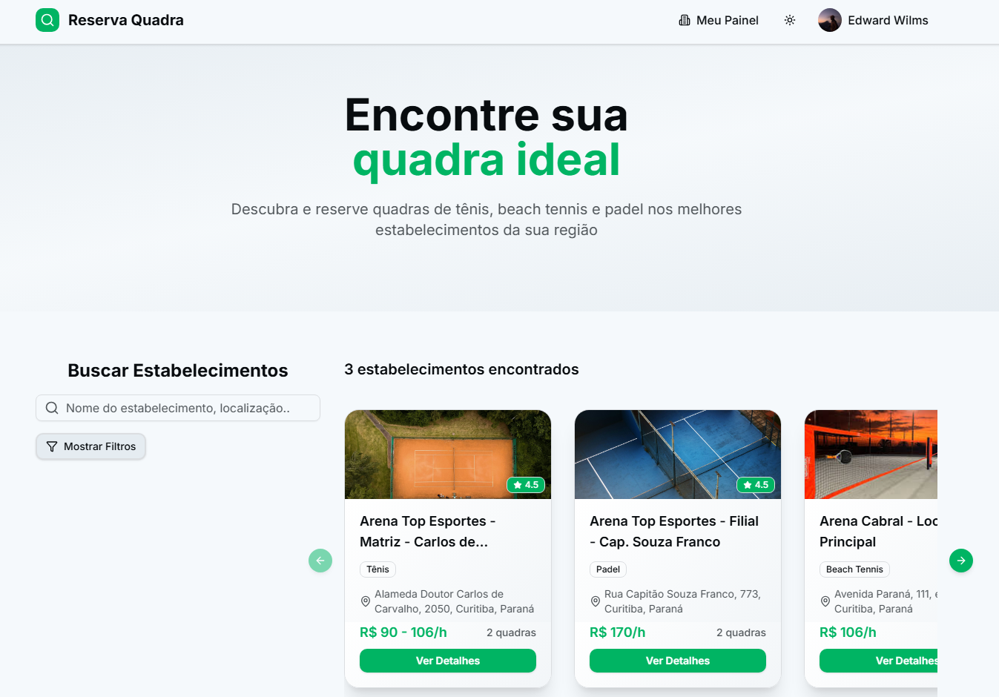
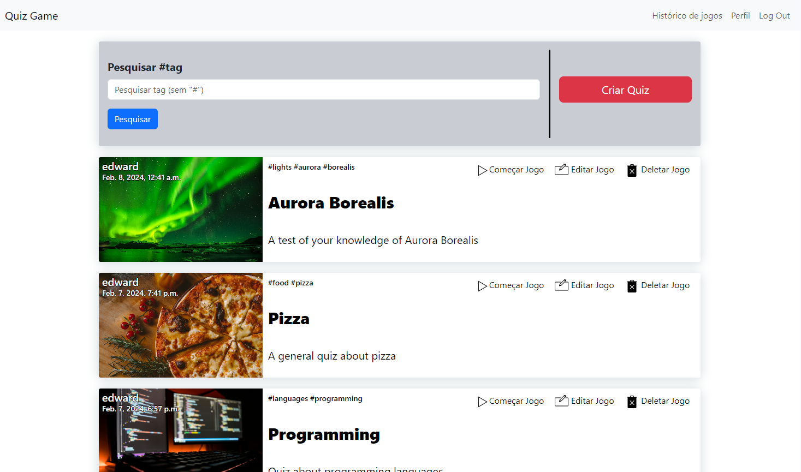

ReservaQuadra
Sports court scheduling SaaS with FastAPI, Next.js, PostgreSQL, Stripe, Mapbox, Twilio, SendGrid, admin dashboards, and deployment to Render/Vercel.
Live projectCurrent Focus
I combine software engineering with a product-development background from global manufacturing. That means I am comfortable with ambiguity, stakeholders, technical tradeoffs, and production constraints.
Recent contributions at MuscleWiki
Experience
Leading end-to-end development of a SaaS fitness platform for mobile and web applications, built around a hybrid backend architecture and a large workout/video content library.
Architecting and implementing technical solutions for enterprise clients where business processes require custom integrations, APIs, middleware, scripts, and automation.
Conceived, architected, and shipped a SaaS platform for sports court scheduling, including backend, frontend, database, deployment, payments, maps, and notifications.
Developed social platform experiences using JavaScript, React Native, Expo, and Node.js, with a focus on client-server integration and engagement features.

Led technical work in a multinational product development environment, giving me a strong foundation in systems thinking, stakeholder management, and rigorous problem solving.
Acted as the technical bridge between customer requirements and engineering teams for medium- and heavy-duty vehicle modifications.
Stack
Python, JavaScript, TypeScript, SQL, HTML5, CSS3
FastAPI, Django, DRF, Node.js, PostgreSQL
Next.js, React, React Native, TailwindCSS, Zod
Docker, GitHub Actions, Nginx, Vercel, Render
Jest, Playwright, Postman, Ruff, mypy, Black, pre-commit
Sentry, Prometheus, Grafana, Paddle, Stripe, Mapbox
Projects

Sports court scheduling SaaS with FastAPI, Next.js, PostgreSQL, Stripe, Mapbox, Twilio, SendGrid, admin dashboards, and deployment to Render/Vercel.
Live project
Django and JavaScript quiz application with CRUD quiz management, live multiplayer gameplay, scoring, deployment, and public access.
Case studyBackground
Harvard CS50X, CS50P, and CS50W, focused on computer science fundamentals, Python, and web programming with Python and JavaScript.
Universidade Federal do Paraná and Budapest University of Technology and Economics. Product engineering experience shaped my approach to reliability and stakeholder alignment.
Green Belt certified. Portuguese native, English fluent, Spanish intermediate, plus basic German and Swedish from international study and work.
Contact
I am based in Curitiba, Brazil and work comfortably with remote teams, technical stakeholders, and business-facing delivery environments.